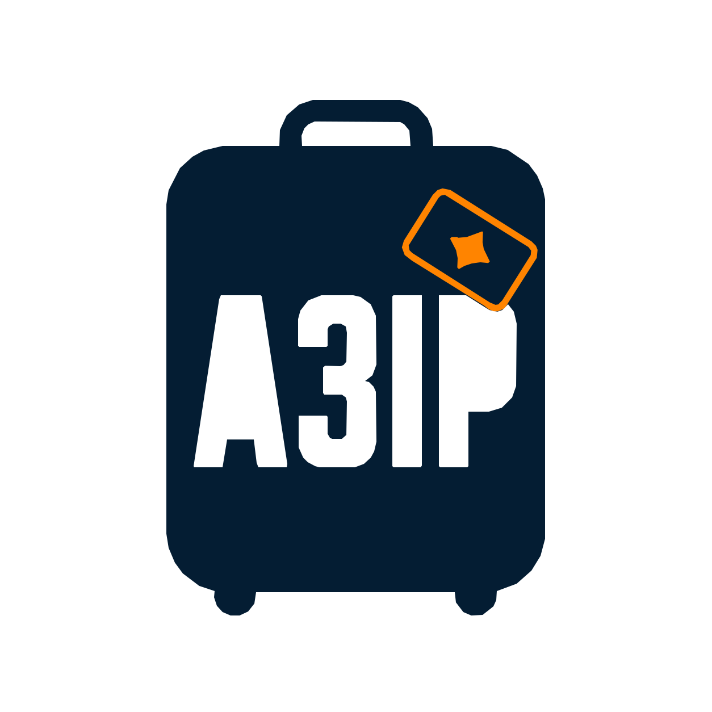

A3IP — AI Infrastructure Installation Package · pronounced “ay-trip”
A permission-aware package format for portable AI agent workflows. Hand one bundle to your AI assistant and it installs the whole thing on Claude Code, Codex, Cursor, or Cowork — asking your permission first.
What is this?
You build a great AI workflow on one platform. You send it to a teammate on another — and it breaks: wrong paths, missing MCP setup, config keys with no context, no idea what to run first. Until now there has been no standard way to package an AI workflow so that another AI can install it from scratch, ask the right setup questions, and confirm the permissions it needs before touching anything.
Bundle skills, protocols, scripts, and artifacts into one .a3ip.bundle — shareable and installable across platforms.
Every filesystem path, network domain, MCP server, and shell command is declared upfront. A3IP doesn't sandbox — your AI is trusted to show the plan and honor it before acting. The value is that the contract is auditable.
The same bundle aims to install consistently across Cowork, Claude Code, Codex, and Cursor — the outcome depends on the receiving AI following the protocol. Per-platform mechanics live in adapters inside the package.
How is it different?
A3IP adopts SKILL.md and composes with MCP and Cowork Plugins. It overlaps heavily with Microsoft APM, which already does portability and installation for developers — A3IP's narrower angle is a conversational, AI-run install. A3IP is not a runtime: your AI still runs the workflow; A3IP is the package format and the install contract.
A3IP packages SKILL.md as a native component — every A3IP skill already is a SKILL.md. A3IP wraps the install protocol around it.
MCP is how an AI calls tools at runtime. A3IP sits above it: it declares which MCP servers a workflow needs and sets them up during a permissioned install.
Cowork Plugins are Anthropic’s first-party packaging for Cowork. A3IP is the cross-platform sibling — same discipline, no lock-in — and targets Cowork first-class.
APM is a mature dependency manager — it resolves, pins, scans, and policy-checks agent context across seven harnesses, and installs it. A3IP's narrower angle is a conversational install the AI runs itself. The overlap is large.
Show me
No special support required — any capable AI agent that can read files and follow instructions can install an A3IP package. The bundle describes everything itself.
.a3ip.bundleyouA single file — no shell scripts, no manual setup.The permission contract your AI shows you — and waits on — before running a thing:
permissions:
network:
- domain: api.github.com
reason: Read pull requests, post review comments
filesystem:
- path: ./reviews/
access: write
reason: Stores generated review reports
shell:
- command: python3
reason: Runs the review script
Five packages you can install today — each a different shape of workflow.
Author a new A3IP package from scratch, guided end to end.
CoworkCodexClaude CodeCursorStructured GitLab/GitHub code review on a 7-category checklist.
CoworkCodexClaude CodeCursorCapture papers, log experiments, synthesize findings — all local markdown.
CoworkCodexClaude CodeA daily standup compiled from your GitHub activity across repos.
CoworkCodexClaude CodeA lightweight backlog and read-only Kanban board across projects.
CoworkClaude CodeHow do I start?
Grab a bundle URL from the gallery and paste it into a conversation with your AI. It reads INSTALL.md, walks you through CONFIGURE.md, and confirms every step before executing.
"Install this A3IP package: https://.../ai-code-review-flow-v1.5.0.a3ip.bundle"
Scaffold a valid package in seconds with the CLI, validate it against the spec, and produce a distributable bundle.
pip install a3ip a3ip scaffold my-workflow a3ip validate my-workflow/ a3ip bundle my-workflow/